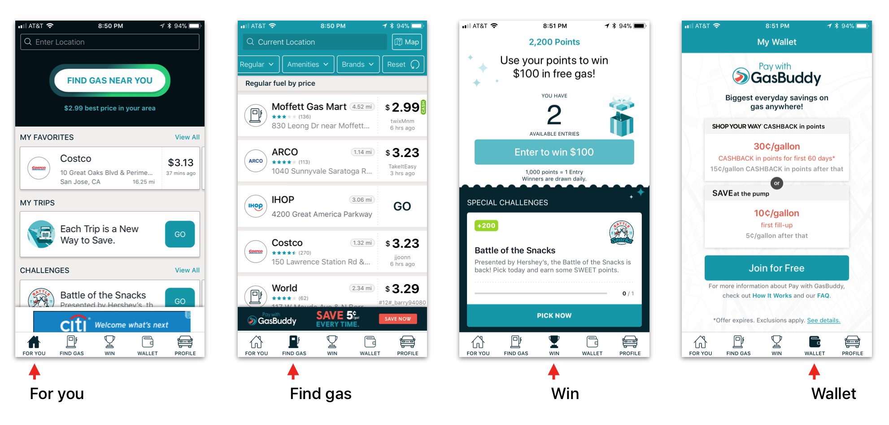
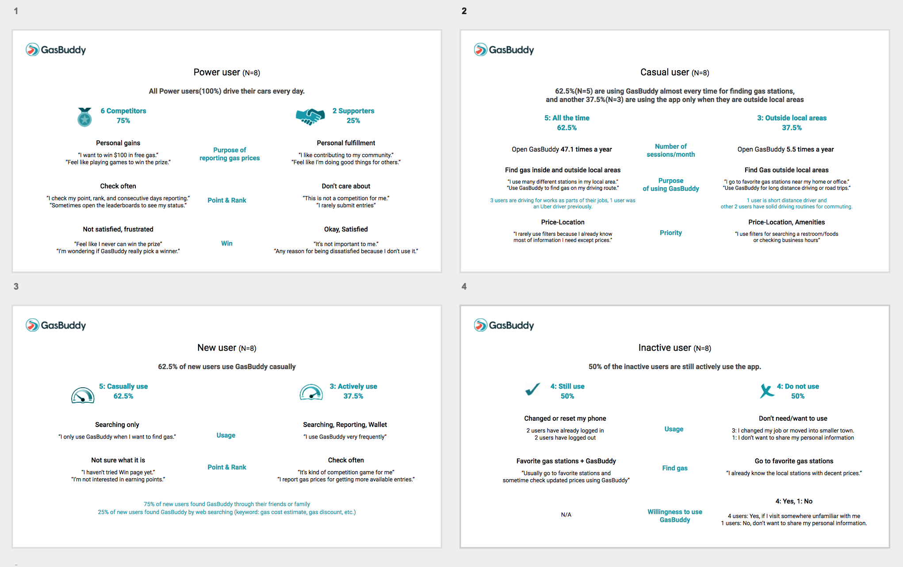

GasBuddy
Summary
GasBuddy is a mobile crowdsourcing platform for sharing up-to-date local gas station prices. I have run mid-large scale user studies with design, marketing, and data science team.
Study 1. User interviews with 4 types of GasBuddy users (N=32)
Conducted user interviews combined with online surveys to get a better understanding of our users' goals, behaviors, and desires. I had 32 participants from urban, suburb, and rural area for in-person/remote user interview sessions focusing on For you, Find gas, Win, and Wallet page.

Participants were categorized into 4 different groups(Power users, casual users, New users, and Inactive users) by their GasBuddy usage patterns and periods. We asked users' driving habits and related GasBuddy experience to understand why they come back to GasBuddy, when/how they use our app, and what makes them satisfied or dissatisfied.

Study 2. GasBuddy payment (N=20)
Currently, conducting user interviews combined with online surveys to see how Pay with GasBuddy users are using their mobile Wallet pages and physical debit cards. In the study 1, 16% of participants(5 out of 32, 4 female, 1 male) were Pay w/ GB users and they scored 4.4 out of 5 on average for their Wallet page experience. However, most participants who have not used Wallet page and Pay w/ GB(84%, 27 out of 32) said they don’t understand exactly what Pay w/ GB is and need more information which is easier to understand. They are confusing Pay w/ GB with a mobile pay or a credit card reward program.
To get a better understanding of user contexts of P w/ GB, I will have total 20 participants(12 Pay w/ GB users + 8 non Pay w/ GB users) to learn their fuel-purchasing habits and related GasBuddy experience.
Study 1. User interviews with 4 types of GasBuddy users (N=32)
Conducted user interviews combined with online surveys to get a better understanding of our users' goals, behaviors, and desires. I had 32 participants from urban, suburb, and rural area for in-person/remote user interview sessions focusing on For you, Find gas, Win, and Wallet page.
Participants were categorized into 4 different groups(Power users, casual users, New users, and Inactive users) by their GasBuddy usage patterns and periods. We asked users' driving habits and related GasBuddy experience to understand why they come back to GasBuddy, when/how they use our app, and what makes them satisfied or dissatisfied.
Study 2. GasBuddy payment (N=20)
Currently, conducting user interviews combined with online surveys to see how Pay with GasBuddy users are using their mobile Wallet pages and physical debit cards. In the study 1, 16% of participants(5 out of 32, 4 female, 1 male) were Pay w/ GB users and they scored 4.4 out of 5 on average for their Wallet page experience. However, most participants who have not used Wallet page and Pay w/ GB(84%, 27 out of 32) said they don’t understand exactly what Pay w/ GB is and need more information which is easier to understand. They are confusing Pay w/ GB with a mobile pay or a credit card reward program.
To get a better understanding of user contexts of P w/ GB, I will have total 20 participants(12 Pay w/ GB users + 8 non Pay w/ GB users) to learn their fuel-purchasing habits and related GasBuddy experience.
Methods
- Qualitative: user interview
- Quantitative: online survey and questionnaires
- Statistical analysis